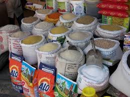
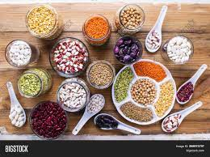

WHY PLANT BASED?
In a fast growing world, we can not overlook the potential growth of health hazards. Disease discoveries continue to sky rocket, many caused by poor eating habits and lack of intake of plant nutrients and fibers. Join the Plant Based community and enjoy a variety of organic products such as cereals, legumes, vegetables and fruits. These have proved to contain the right amount of nutrients and minerals to keep you healthy. Have your body naturally in check. Live long enough to make precious memories of your life!!
We have also patnered with the world's most influential people and companies that trust us to ensure they are healthy. Among these are well-known celebrities such as footballers, athletes, dancers and musicians. We also supply our products to hospitals and top vegan companies such as Amy's Kitchen Inc. and Axiom Foods Inc.
OUR SERVICES
01
CEREALS
Maize, wheat, sorghum, barley, oats,etc. all dried and preserved.
02
LEGUMES
All types of beans, greengrams,peas and peanuts
03
FRUITS

An apple a day keeps the doctor away!
04
VEGETABLES

Freshly picked because we care
I went vegan in 2015 and Plant Based has been my only supplier. I'm very healthy and going for the 8th world title this year.

Sir. Lewis Hamilton
Plant Based is the best. Now I can go long hours in the gym and not get fatigued. My posture and form have improved greatly.
Naomi Osaka
As a mother of two, I am proud to have introduced them to this diet at an early age. My boys are very happy and playful. We haven't been to the doctor's in three years.